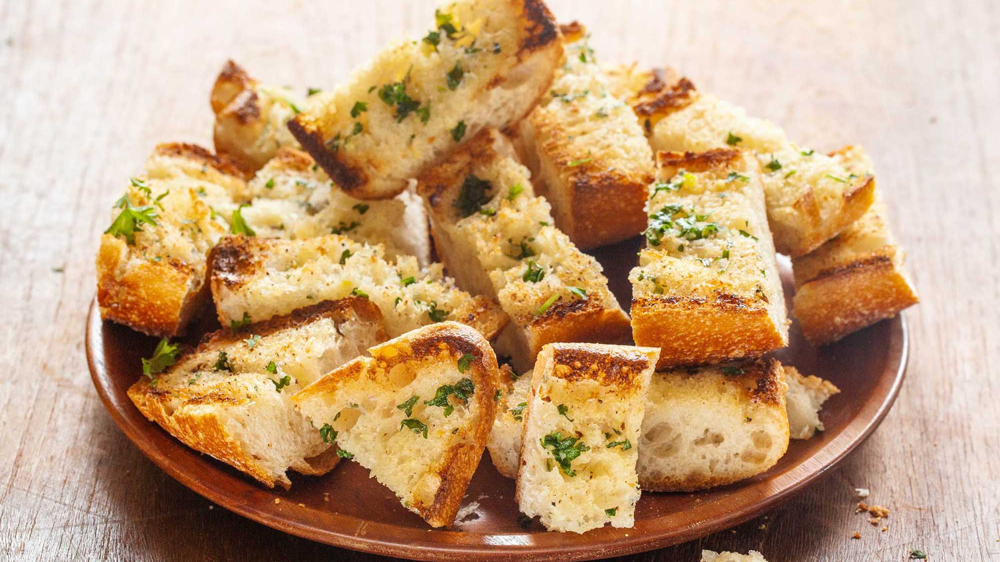

Shitty Garlic Bread

if you really want people to leave, make this horrendous bread as a random snack
Ingredients
- 2 tablespoons butter, softened
- 1 clove garlic, crushed
- 2 tablespoons grated Parmesan cheese
- ground black pepper to taste
- 1/4 large baguette, sliced
- 1 teaspoon chopped fresh parsley, or to taste
Cooking Instructions
- Preheat a grill to high heat
- Mix together butter, garlic, Parmesan cheese, and pepper in a bowl
- Spread the butter mixture generously on the baguette slices
- Place slices on the preheated grill and cook until butter is melted and bread is lightly brown, about 30 seconds
- Sprinkle with parsley and serve immediately
Chicken Parmesan